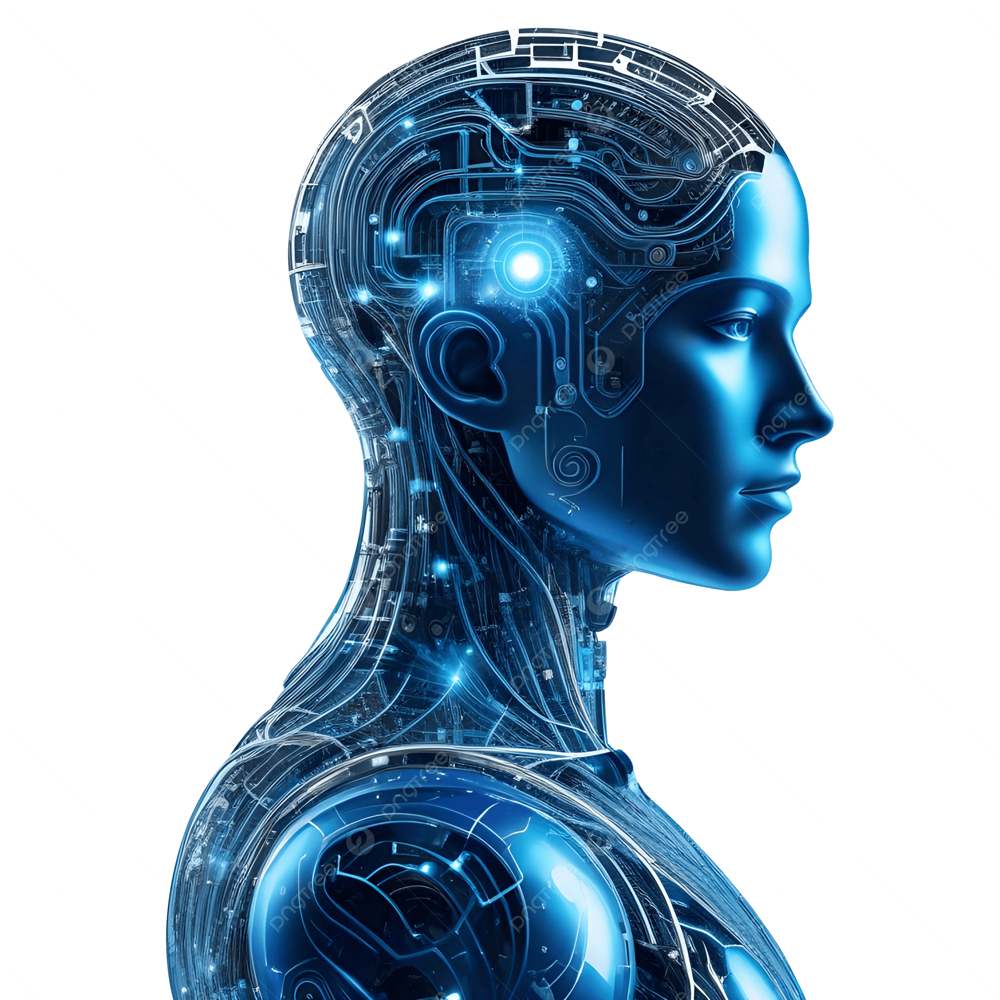

¿Qué es la IA?
La inteligencia artificial (IA) es el campo de la informática que crea sistemas capaces de realizar tareas que normalmente requieren inteligencia humana, como aprender, razonar, reconocer patrones o tomar decisiones.
Funcionamiento
La inteligencia artificial funciona aprendiendo patrones a partir de grandes cantidades de datos mediante algoritmos matemáticos, lo que le permite realizar tareas como reconocer imágenes, entender lenguaje o tomar decisiones.
Futuros Planes con IA
La IA avanzará hacia modelos más autónomos, multimodales, regulados y accesibles, transformando empresas, empleos y tecnologías clave en la próxima década.
Tendencias tecnológicas que marcarán el futuro:
- IA multimodal como estándar
- Modelos más pequeños y eficientes
- IA cuántica
- Más allá de lo binario: los modelos bitnet con parámetros ternarios prometen cálculos más rápidos y menor consumo energético
.png)
¿Cómo fue creada?
La inteligencia artificial nació como una disciplina en los años 1950, cuando científicos comenzaron a diseñar máquinas capaces de razonar, aprender y resolver problemas como lo haría un ser humano.
Como se crea hoy en dia una IA:
- Recolección de datos
- Entrenamiento: mediante algoritmos que ajustan millones o billones de parámetros.
- Evaluación y ajuste para mejorar precisión y seguridad.
- Implementación: en aplicaciones reales.

Implementación en la vida diaria
La IA ya está integrada en la vida diaria a través de asistentes digitales, recomendaciones personalizadas, automatización en el trabajo, diagnósticos médicos, transporte inteligente y herramientas educativas que adaptan el aprendizaje.
- IA en el hogar
- Asistentes de voz
- Domótica inteligente
- Electrodomésticos autónomos
- IA en el trabajo
- Automatización de tareas repetitivas
- Herramientas de productividad
- Análisis predictivo
- IA en transporte y movilidad
- Sistemas de navegación
- Vehículos con asistencia avanzada
- Gestión inteligente del transporte público
- IA en salud
- Diagnóstico asistido
- Monitoreo continuo
- Medicina personalizada
- IA en educación
- Plataformas de aprendizaje adaptativo
- Corrección automática de ejercicios
- Simulaciones interactivas
- IA en entretenimiento
- Recomendaciones personalizadas
- NPCs más realistas
- Edición automática de fotos y videos